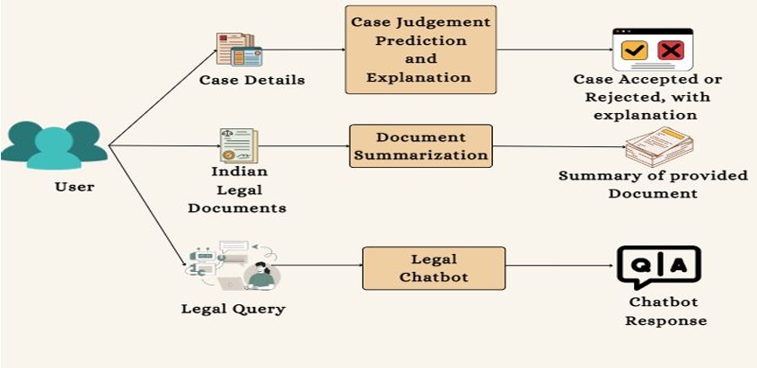

First-author publication
Automating Court Judgement Prediction and Explanation for Indian Legal Cases
ICDSA 2025, Springer LNNS
Indian courts face enormous case backlogs. This research predicts the outcome of a court case from its full text, then highlights the sentences that drove the prediction, so the model's reasoning can be checked rather than trusted blindly.
A hierarchical XLNet and BiGRU model, trained on about 35,000 cases, makes the prediction. The system also summarizes judgments and answers questions about Indian statutes through a retrieval-augmented chatbot.
- Judgment prediction
- Explainability
- Summarization
- Legal chatbot